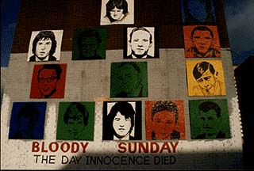

The fatal shooting on 'Bloody Sunday' began at approximately 4.10pm when soldiers entered the Rossville Street area of the Bogside. However, before the fatal shooting began two people were shot and wounded in William Street at about 3.55pm. The two people were Damien Donaghy (15) and John Johnson (59). The soldiers involved, Soldier A and B, claimed that they had come under attack from nailbombs. No other witnesses, civilian or military heard any nailbombs explode at 3.55pm. Johnson was shot twice in the incident and died on 16 June 1972.
Most of those shot dead on 'Bloody Sunday' were killed in four main areas: the car park (courtyard) of Rossville Flats; the forecourt of Rossville Flats (between the Flats and Joseph Place); at the rubble and wire barricade on Rossville Street (between Rossville Flats and Glenfada Park); and in the area around Glenfada Park (between Glenfada Park and Abbey Park). The following accounts look at the shootings in each of these areas in turn. It is not possible to give the exact time of any particular shooting or the exact order in which all 13 people were shot dead. However, within the above four main areas the sequence of fatal shooting can be established from the available evidence.

As soldiers of the Parachute Regiment entered the Bogside a number of their Saracen Armoured Personnel Carriers (APCs) drove into the car park (courtyard) of Rossville Flats. Alana Burke (18) and Patrick Campbell (53) were run down by two different APCs as they fled across the car park. In addition to Jack Duddy (17), who was shot dead in the car park, four people were wounded by shooting: Margaret Deery (37; the only woman shot and injured on 'Bloody Sunday'), Michael Bridge (25), Michael Bradley (22) and Patrick McDaid (24).
Jack Duddy was killed by a single shot that passed through his upper chest from right to left and slightly forward. Four witnesses, Edward Daly, then a Catholic priest, Mrs Bonner, Mrs Duffy and Mr Tucker, all stated that Duddy was unarmed at the time he was shot and that he was running away from soldiers when he was shot. Three of these witness stated that they saw a soldier take deliberate aim at Duddy as he fled across the courtyard of Rossville Flats. Lord Widgery concluded that he was hit by a bullet mean for someone else. Jack Duddy was probably the first person to be shot dead on 'Bloody Sunday'.
As the shooting intensified a group of people became caught in the area between Rosville Flats and the maisonnettes of Joseph Place. Pat Doherty (31) was among them and was shot as he tried to crawl to safety. Barney McGuigan (41) heard the calls of Doherty and left the relative safety of the side of Rosville Flats to go to his aid but McGuigan was shot dead within a couple of paces of where he had been. Two other people were shot and wounded in this area, Daniel McGowan (37) and Patrick Campbell (53).
Patrick Doherty was shot from behind while trying to crawl to safety in the vicinity of the forecourt of Rossville Flats, between the Flats and Joseph Place. He was shot once and died at the scene. The bullet entered his right buttock and travelled forward and upward through his body before exiting from the left of his chest. Patrick Doherty was photographed by Gilles Peress moments before he died. The photographs showed that he was not armed. Lord Widgery concluded that he had probably been shot by Soldier F (who was in Glenfada Park at the time) who claimed that Patrick Doherty had a pistol in his hand.
Barney McGuigan was going to the aid of Patrick Doherty and was signalling with a white handkerchief held in his hand when he was shot dead by a single bullet through the back of his head. The bullet entered close to his left ear and exited through his right eye travelling forward and upward through his skull. He died where he fell near the corner of Rossville Flats between Rossville Street and Joseph Place. A number of eyewitnesses stated that he was unarmed. Lead particles were found on both his hands which drew Lord Widgery to conclude that: "he had been in close proximity to someone who had fired" (Widgery Report, Paragraph 74). This finding ignored the possibility of contamination from a number of other sources.
Six men between the ages of 17 and 20 years were shot and killed at or near the rubble barricade which lay across Rossville Street, close to the main entrance to Rossville Flats. The men were: Hugh Gilmore (17); Kevin McElhinney (17); Michael Kelly (17); John Young (17); William Nash (19); and Michael McDaid (20). In addition to those killed at the barricade Alexander 'Alex' Nash (52) was shot and wounded. Alexander had seen the body of his son William Nash lying on the rubble barricade and had run to his side.
Hugh Gilmore was shot by a single bullet that passed through his body and through his left forearm as he was running away from soldiers in Rossville Street. The bullet travelled from right to left through his chest travelling horizontally and slightly forward. A photograph of Gilmore, taken seconds after he was hit, showed that he was unarmed a fact confirmed by a number of witnesses. Gilmore was shot close to the rubble barricade but managed to run for several meters before falling to the ground at the side of Rossville Flats. A student nurse tried to treat his wounds. He died shortly after where he had fallen.
Kevin McElhinney was shot from behind, probably by Soldier K, as he was attempting to crawl to safety in the Rossville Flats. The bullet entered his left buttock and travelled up through his body exiting near his shoulder. Two eyewitnesses, including a Catholic priest, testified that McElhinney was unarmed. He was shot close to the front entrance of Rossville Flats, near to the rubble barricade, and was dragged inside by some people who were already sheltering there. He died almost immediately.
Michael Kelly died from a single shot to his abdomen, probably fired by Soldier F. The bullet entered from the front and travelled backward and downward. He died within a few minutes of being shot. He was shot near the rubble barricade in front of Rossville Flats. Lord Widgery accepted that Kelly was not armed but concluded that he must have been standing close to someone who had discharged their weapon because of lead particles on Kelly's right cuff. This finding ignored the strong likelihood of contamination from soldiers who handled the bodies when they were taken to the morgue (this was true in the case of many of those killed).
John Young was killed by a single shot to the head at the rubble barricade on Rossville Street. The bullet entered close to his left eye and travelled backward and downward before exiting through his ribs on the left side of his back. Two eyewitnesses gave evidence to the Widgery tribunal that Young was unarmed when he was shot. Lead particles were found on his left hand and Lord Widgery concluded that he had probably fired a gun. This conclusion ignored the evidence given by the forensic expert, Dr John Martin, that a body could be contaminated by being handled by someone who had fired a weapon, or by contact with the floor of an army vehicle, or by being close to someone who had fired a weapon.
William Nash was killed by a single shot to his chest near the rubble barricade in front of Rossville Flats. The bullet entered his right upper chest from the front and travelled backward and downward exiting from his lower back. He was possibly shot by Soldier P. He was killed at almost the same time and in the same circumstances as John Young. Eyewitness accounts state that Nash was unarmed and was going to the aid of someone else when he himself was shot. However, because lead particles were found on his left hand Lord Widgery concluded that he had probably been firing a gun.
Michael McDaid was killed by a single shot to his face at the rubble barricade in front of Rossville Flats. He probably died immediately he had been shot. As in the case of Michael Kelly, lead particles were found on McDaid's jacket and his right hand. Lord Widgery concluded that he was near to someone discharging a weapon and ignored the possibility of contamination from the soldiers or their vehicles. A recent book Eyewitness Bloody Sunday: The Truth included a photograph of McDaid moments before he was shot. This photograph shows McDaid walking away from the soldiers and facing towards 'Free Derry Corner'. This evidence, plus the results of post-mortem examinations, which showed the trajectory of the bullet to be from the front to the back and from above to below, plus recent evidence that soldiers on the Derry Walls fired into the bogside, has led the author of the book to conclude that McDaid, Nash and Young could have been shot by one or more soldiers who were on the Derry Walls.
Following the beginning of the intensive shooting on Rossville Street many people sought shelter in the courtyard of Glenfada Park. However, at least four soldiers (Soldiers E, F, G and H) entered the area and began firing on people sheltering there. Soldier E fired 3 shots; Soldier F fired 13 shots; Soldier H fired 22 shots; and Soldier G fired 6 shots. Soldier H claimed that he saw a man with a weapon at a window of one of the flats in Glenfada Park and fired and missed. The man reappeared and Soldier H fired and missed again. According to Soldier H this sequence of events was repeated 19 times. Lord Widgery accepted photographic evidence which showed that there were no bullet holes in the window, walls or roof of the house in question. Four men were shot dead at Glenfada Park, they were: James Wray (22); Gerald Donaghy (17); Gerald McKinney (35); and William McKinney (26). In addition a number of people were shot and wounded: Joseph 'Joe' Friel (20); Michael Quinn (17); Daniel Gillespie (31); Paddy O'Donnell (41); and Joseph Mahon (16).
James Wray was shot dead in Glenfada Park. James was shot twice, the first bullet travelled 'superficially' from right to left across his body, the second bullet entered his back and travelled from right to left. Two eyewitnesses gave evidence to the Widgery Tribunal that Wray was shot and wounded and then was shot dead, from close range, while he lay on the ground. A number of people, who were not called to give evidence, stated that Wray was complaining that he was unable to move his legs when he was shot a second time and killed.
Gerald Donaghy was shot once in the abdomen, probably by Soldier G, but did not die at the scene. He was trying to run to safety between Glenfada Park and Abbey Park when he was shot. He was eventually taken to the house of Raymond Rogan in the hope of getting medical treatment for his wounds. In the house his clothes were searched for identification. Gerald Donaghy was examined in the house by Doctor Kevin Swords who had to open his clothing to carry out the examination. Dr Swords recommended that Gerald be taken to Altnagelvin Hospital. Raymond Rogan and Leo Young began the drive to the hospital with Gerald in Rogan's car. At a military checkpoint in Barrack Street both Rogan and Young were ordered to leave the vehicle and a soldier drove it to the Regimental Aid Post of 1st Battalion Royal Anglian Regiment where Soldier 138, a Medical Officer, pronounced that Gerald Donaghy was dead. Soldier 138 carried out a detailed examination of Donaghy's body shortly after. None of those who were in contact with Donaghy after his shooting, including Soldier 138, noticed anything in his pockets. However, a police photograph taken shortly soon after showed a nailbomb in one of Donaghy's pockets. Soldier 127 then found a total of four nailbombs on Donaghy following a search of his clothes. Lord Widgery rejected the suggestion that the bombs were planted on Donaghy by a member of the security forces: "No evidence was offered as to ... why Donaghy should have been singled out for this treatment." (Widgery Report, Paragraph 88). The fact that Donaghy was a member of Fianna �reann, the youth wing of the Irish Republican Army (IRA), might have been the reason why he was "singled out".
Gerald McKinney was also shot dead in Glenfada Park. He had been part of the group of people who were caught in Glenfada Park and who were trying to get to safety towards Westland Street. He decided to make a run for it at the same time as Gerald Donaghy who was just ahead of him. Donaghy was shot and McKinney must have seen the soldier. Two eyewitnesses stated that McKinney then raised his arms in surrender and shouted, "Don't shoot!, Don't shoot!". The trajectory of the bullet through his chest from left to right is consistent with this evidence. Had McKinney's arms not been raised the bullet would have passed through one or both arms.
William McKinney was shot dead after he left the safety of cover to try to assist Gerald McKinney (not a relation) who had been shot moments before. He was shot from behind, as he was bent over Gerald McKinney, and the bullet travelled through his chest from right to left and then through his left wrist.